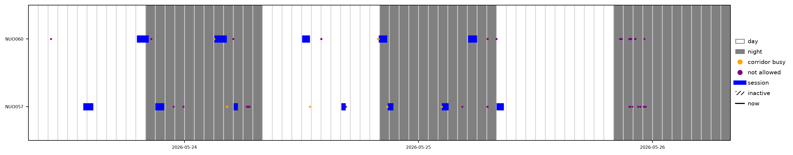
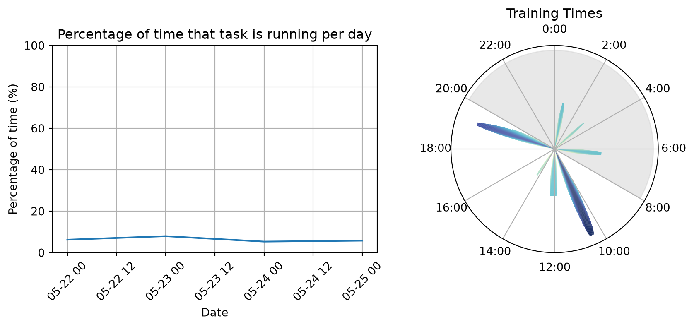
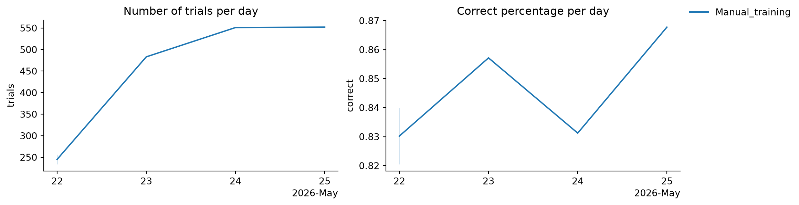
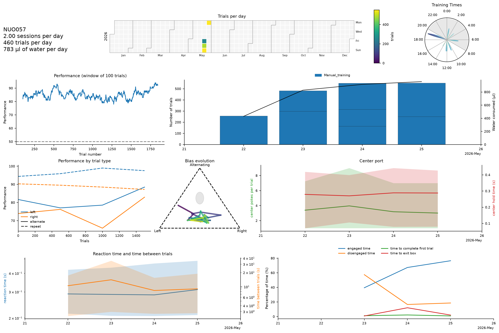
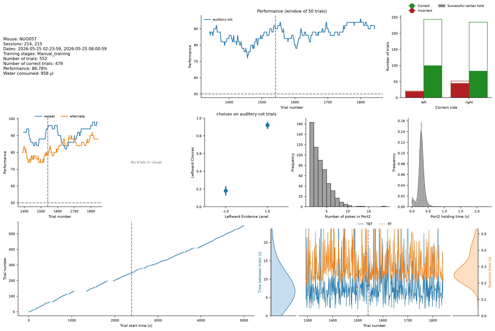
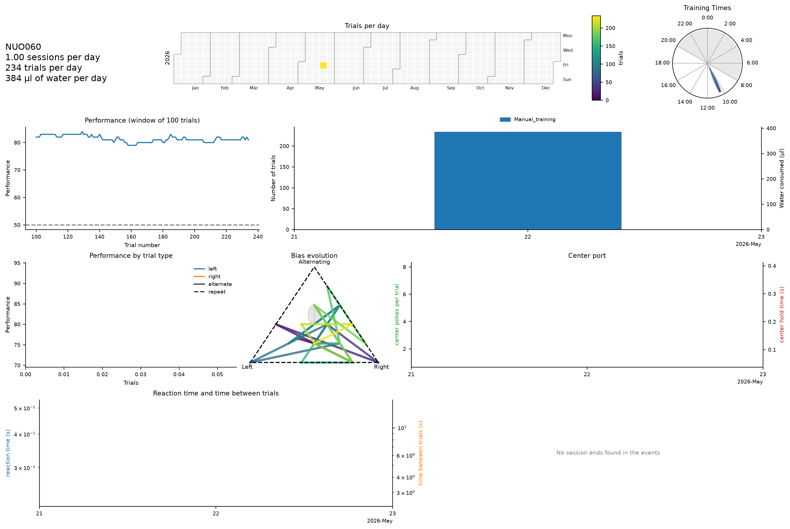

Setups: village01, village02.
Setups: village01, village02.
Corridor plot of the last 4 days

Performance over time for all mice
Behavioral Box occupancy and training times heatmap

Overall number of trials and performance for the whole training cohort

Summary of the subject’s full training history

Analysis of data from 2026-05-25

Summary of the subject’s full training history

Analysis of data from 2026-05-25
NUO060 did not train on 2026-05-25.
Panels and cells of this report that could not be generated (they show a red message where they should be).